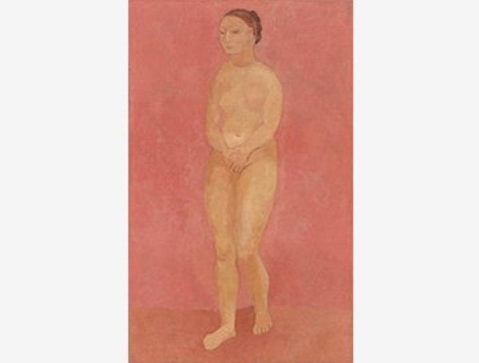
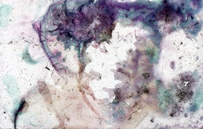
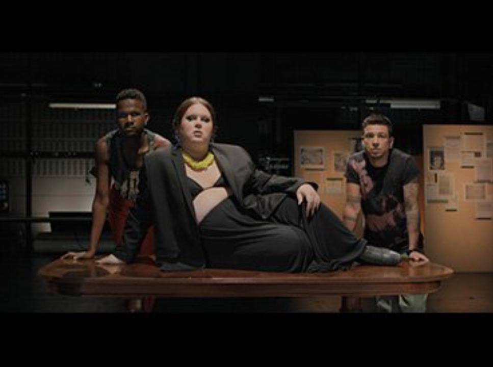
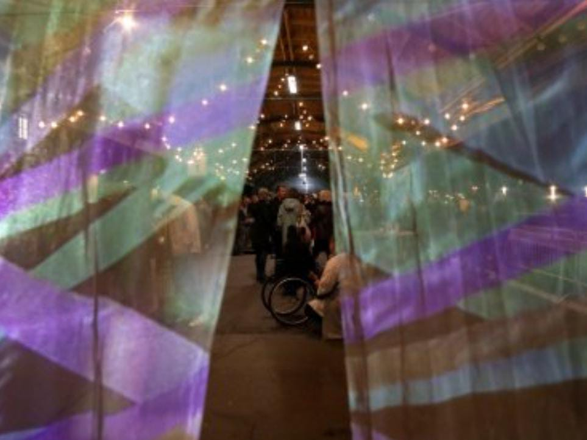
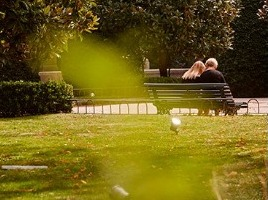
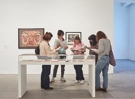
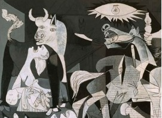
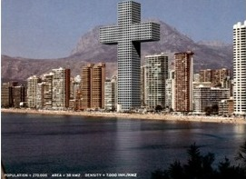

Exposiciones
29 noviembre, 2023 - 11 marzo, 2024
Ibon Aranberri
Vista parcial

15 noviembre, 2023 - 4 marzo,2024
Picasso 1906
La gran transformación
4 octubre, 2023 - 26 febrero,2024
Ben Shahn
De la no conformidad
Colección

Actividades

Martes 28, miércoles 29 y jueves 30 de noviembre, 2023 - Consultar programa
Archivos del común V
Memorias fúngicas

Miércoles 29 de noviembre, 2023 - 21:00 h
Cabello/Carceller. Una voz para Erauso. Epílogo para un tiempo trans
Presentación de Gabriela Cabezón Cámara

Viernes 1, sábado 2 y domingo 3 de diciembre, 2023 - Consultar programa
(Dis)encuentros vulnerables
V jornadas en torno a la discapacidad

De lunes a domingo - Consultar horarios
¿Por dónde empiezo?
Breve introducción al Museo y su Colección

Lunes, viernes y sábado - Consultar horarios
Salirse del margen. El extrañamiento del errante
Visita para adult+s sobre el exilio con material de la Biblioteca y Centro de Documentación

Lunes, jueves, sábado y domingo - Consultar horarios
Desplazar Guernica
Visita para adult+s a obras de la Colección

De jueves a domingo - Consultar horarios